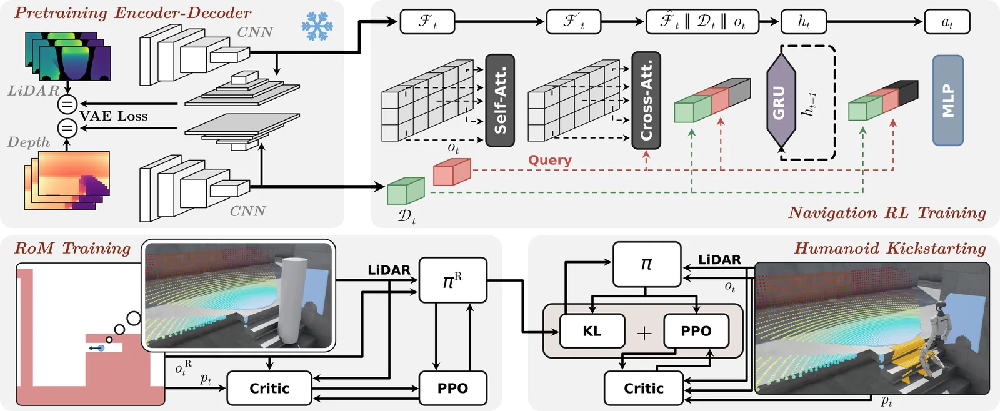
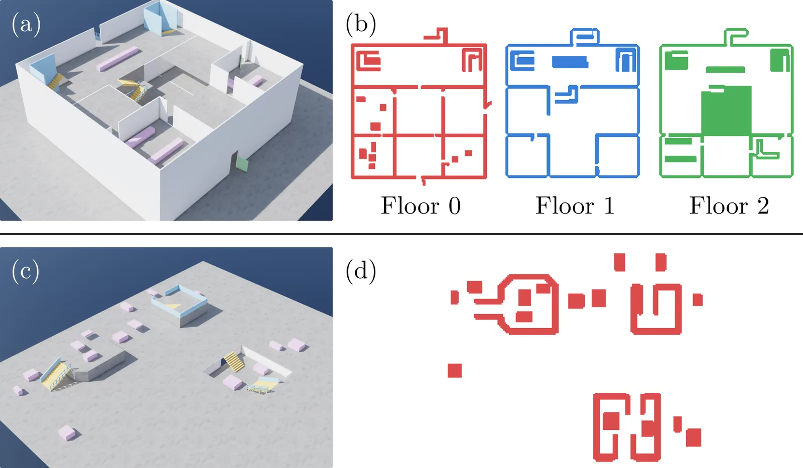
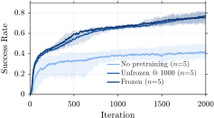
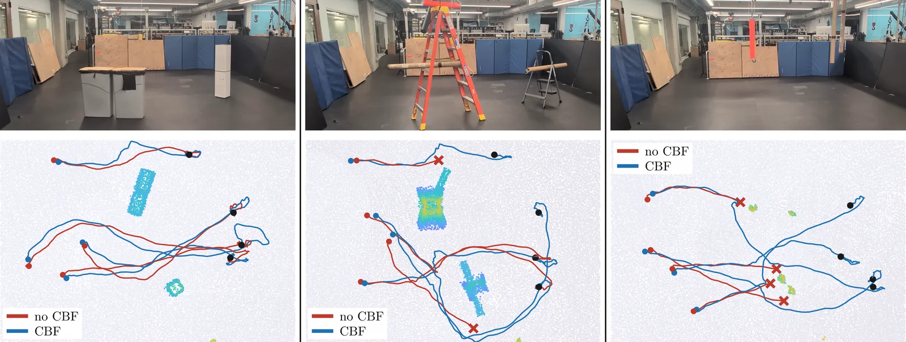
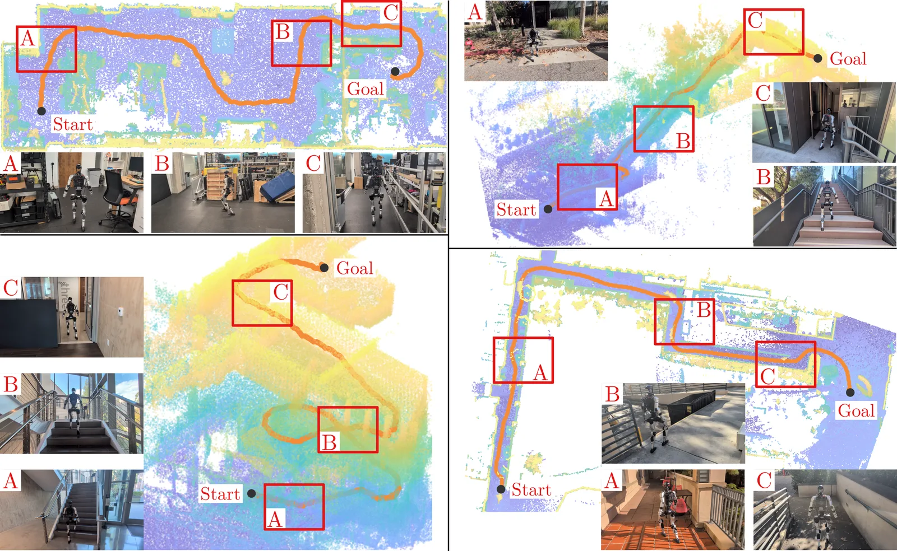
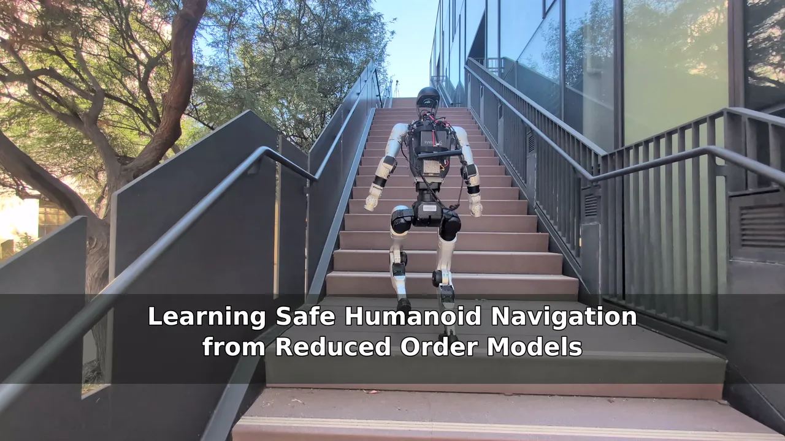

Abstract
Research in humanoid robotics has achieved rapid progress in locomotion, and recent results have pushed the boundary on autonomous navigation. We demonstrate that a standard single-stage RL navigation pipeline struggles to scale to multi-level and multi-story terrain, limited by the difficulty of complex humanoid terrain interactions such as stairs.
To overcome this challenge, we decompose the navigation problem into two pieces. First, we train a policy operating on the reduced order dynamics but with full 3D LiDAR observations to navigate complex, multi-story terrain. We then utilize this navigation knowledge to kickstart a policy operating on the full-order humanoid dynamics, with a frozen locomotion policy in the loop.
Additionally, we demonstrate that applying a Poisson safety filter to the navigation policy output recovers safety in the presence of out-of-distribution obstacles, without dropping navigation success rate. We demonstrate the resulting RoM-Nav policy on a Unitree G1, accomplishing mapless multi-floor navigation covering trials with over 10 m of vertical displacement and over 100 m of path length.
Method
The navigation policy is trained for deployment on a Unitree G1 equipped with a Mid-360 LiDAR and a downward-facing ZED Mini depth camera. It runs at 5 Hz and emits planar velocity commands to a frozen locomotion policy running at 50 Hz, with limits of 1 m/s forward, 0.25 m/s lateral and 1 rad/s angular.

A.Kickstarting from a reduced order model
The final navigation policy is kickstarted from one trained on a single integrator with heading, whose environment is an occupancy grid derived from the same 3D terrain. When a command drives into an occupied cell, the penetrating component is projected out, sliding along the boundary. Trivializing the environment interaction this way lets the reduced-order policy reach strong navigation performance quickly.
That policy then supervises training on the humanoid through a weighted combination of the PPO objective and a KL divergence against the RoM policy:
The weight \(\lambda\) is 1 for the first 100 iterations, then decays to 0.05 by iteration 1100, where it holds until training finishes at 2000 iterations. The RoM policy trains in 12 hours on one H100; the RoM-Nav policy takes 32 hours. Combined training is under 45 hours on a single GPU.
B.Pretrained vision encoders
The LiDAR range image and depth image are high-dimensional inputs requiring significant visual processing. Rather than learn these features during RL, we pretrain a CNN encoder for each as a denoising VAE, with heads for depth, XYZ and valid-mask reconstruction plus ground/obstacle/stair/ramp segmentation, so that critical features are retained in the latent. Inputs are noised, 0–80 % pixel dropout is applied, and the robot's head occlusion mask is varied. The encoders are trained for 10 epochs on 1M uniform and 1M stair- and ramp-oversampled images, then frozen.
C.Environments, spawns and goals
Where existing work uses single-level layouts, deploying in multi-level real-world environments requires a different approach. We procedurally generate outdoor tiles, single-room tiles and multi-story building tiles. A tile is multi-story if there exist \(x, y\) coordinates containing multiple disjoint \(z\) locations that are coherent goals — the same planar position on different floors. Because tiles are generated programmatically, ground-truth traversability is recorded during generation and rasterized into a 0.2 m occupancy grid, maintained per floor.
Spawns and goals are not uniform. With probability 0.3 the spawn is placed on or near the mouth of a stair or ramp, drawn from a phase-indexed gait library of the locomotion policy traversing that geometry, so the robot begins mid-stride rather than standing. Goals are capped at 30 m of geodesic distance — computed by a CUDA wavefront kernel — and biased to cross height levels: three-story tiles sample cross-level goals 100 % of the time, other tiles 50 %.

Results in Simulation
A.RoM kickstarting
We compare four arms. Single-Stage is trained directly on the humanoid via PPO for 4000 iterations. RoM (cyl) is the reduced-order policy evaluated on its own dynamics, an upper bound for the method. RoM (hum) is that same policy deployed zero-shot onto the humanoid. RoM-Nav is the proposed method. Every policy is spawned from the same 1024 initial conditions on terrain generated with a different seed from training.
| Arm | SR@45 (%) | SR@120 (%) | T2G (s) | SPL |
|---|---|---|---|---|
| RoM (cyl)* | 84.1 | 93.6 | 25.6 | 0.776 |
| Single-Stage | 62.2 | 81.7 | 32.1 | 0.690 |
| RoM (hum) | 74.2 | 88.1 | 29.8 | 0.713 |
| RoM-Nav | 82.3 | 92.8 | 28.8 | 0.769 |
Single-Stage underperforms throughout, while RoM-Nav lands within 1–2 % of the reduced-order upper bound. The RoM transfers onto the humanoid reasonably well without kickstarting, but kickstarting recovers a further 8 % success at 45 s and 5 % at 120 s.
| 45 s | 120 s | |||
|---|---|---|---|---|
| Contrast (%) | same | cross | same | cross |
| RoM-Nav − RoM (hum) | +1.5 | +15.2† | +0.6 | +9.1† |
| RoM-Nav − Single-Stage | +6.8† | +34.6† | +3.0† | +19.7† |
RoM-Nav makes all of its progress back on the cross-level trials, where stairs or ramps must be traversed to change \(z\) level. The improvement comes primarily from fewer falls: on the 120 s cross-level trials, timeout rates are 4.9 % for RoM (hum) against 3.7 % for RoM-Nav, but the fall rate drops from 16.3 % to 8.3 %.
B.Pretrained encoders
Three variants isolate the encoder choice. No pretraining randomly initializes the CNN and trains it with PPO. Unfrozen @ 1000 takes the pretrained weights and unfreezes them after 1000 iterations. Frozen is the deployed configuration. Without pretraining, success is dramatically reduced; frozen and unfrozen reach equivalent performance, and training the CNN weights costs 15 % more per iteration.

C.Spawn and goal sampling
We ablate the two devices that shape the training distribution: Uniform drops the stair oversampling, NoCap replaces the geodesic goal cap with a Euclidean one, and UniformNoCap drops both.
| Arm | SR@45 (%) | SR@120 (%) | T2G (s) | SPL |
|---|---|---|---|---|
| RoM | 84.1 | 93.6 | 25.6 | 0.776 |
| Uniform | 70.9 | 77.4 | 23.3 | 0.640 |
| NoCap | 69.8 | 75.8 | 22.9 | 0.624 |
| UniformNoCap | 65.7 | 75.1 | 24.9 | 0.601 |
| 45 s | 120 s | |||
|---|---|---|---|---|
| Contrast (%) | same | cross | same | cross |
| RoM − Uniform | +0.0 | +27.8† | +0.6 | +33.5† |
| RoM − NoCap | −0.6 | +30.7† | −0.2 | +37.7† |
| RoM − UniformNoCap | +1.0 | +37.7† | +0.0 | +39.0† |
Removing either device costs significantly and by approximately the same amount, and removing both costs more. The entire loss falls on cross-level goals — the same-level columns are flat to within a point. Both sampling procedures are what make cross-floor navigation learnable.
Safety under Out-of-Distribution Obstacles
A learned navigation policy carries no collision guarantee. We layer a Poisson safety filter on its output: the point cloud is rasterized into a 0.05 m occupancy grid with the ground removed, convolved with the robot's radius, and Poisson's equation is solved over the grid to synthesize a control barrier function \(h\) directly from raw occupancy — with no learned value function, disturbance model or obstacle detector. A closed-form QP then projects the policy's command onto the safe set:
with \(\alpha = 0.75\). To test it, we built three hardware environments and flew ten shared spawn/goal pairs through each, with the filter both on and off. The room is mapped with GLIM and the robot continuously relocalized, purely to align initial conditions — the map is never available to the policy, which remains strictly mapless.
| Obstacle Type | Arm | Success | Collision(s) | Time to goal (s) |
|---|---|---|---|---|
| In-Distribution | no CBF | 10/10 | 0/10 | 5.9 ± 1.5 |
| CBF | 10/10 | 0/10 | 6.7 ± 2.1 | |
| Out-of-Distribution | no CBF | 10/10 | 2/10 | 7.5 ± 1.7 |
| CBF | 10/10 | 0/10 | 11.0 ± 5.8 | |
| Adversarial | no CBF | 10/10 | 4/10 | 5.5 ± 1.0 |
| CBF | 10/10 | 0/10 | 6.9 ± 1.7 |
On in-distribution obstacles neither arm collides. On out-of-distribution geometry the unfiltered policy collides twice, and on the adversarial hanging tubes four times; the filter collides on neither. It pays for this in time to goal, which rises in both out-of-distribution environments. Success rate never drops.

Hardware Deployment
We deploy RoM-Nav on a Unitree G1 for mapless, long-horizon navigation in real buildings and outdoors. The trials include vertical climbs of up to 10 m — beyond the training distribution extreme of 8 m — and path lengths of up to 100 m, well beyond the 30 m training cap. None of the hardware trials included a collision.
Each composite below shows the third-person view alongside the registered LiDAR map with the walked route, the live LiDAR return, and the robot's own depth camera. Figures quoted are measured from each run's recorded bag.

Limitations
LiDAR is not a sufficient sensor for transparent obstacles: a cardboard sheet was used to block a glass door and window in one trial, which the robot might otherwise have tried to traverse. Beyond those specific instances, no intentional environmental modifications were required. The method also assumes an accurate goal expressed in the body frame, which is a strong assumption. Finally, the planar CBF could in principle block routes the policy deems traversable, though this was not observed experimentally.
Supplementary Video
The full supplementary video covers the architecture, both training stages, the policy comparison in simulation, the safety filter, and all four hardware deployments at length.

Play · 8:36Citation
@misc{romnav2026,
title = {Learning Safe Humanoid Navigation from Reduced Order Models},
author = {TODO},
year = {2026},
eprint = {TODO},
archivePrefix = {arXiv},
primaryClass = {cs.RO}
}